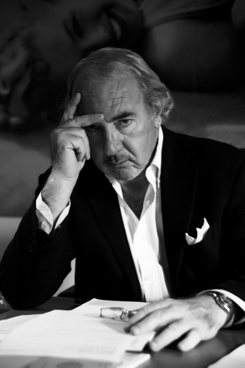

Avv. Michele Lo Foco
Founder of Studio Legale Lo Foco
The founder of the firm, Avv. Michele Lo Foco worked in the film and audiovisual sector over more than forty years of professional activity, collaborating with public and private institutions on copyright protection and cultural policy.
Learn more at linktr.ee
🎓 Education
- Graduated in Law from the University of Parma (1971).
- Admitted as procuratore legale (1974) and as avvocato (1980).
- With focus on commercial law and corporate issues, with experience in the United States and at the National Council of Notaries.
📜 Professional Experience
- President of the 1st Experts Commission of the Ministry of Tourism and Entertainment (1981–1985; 1988–1992).
- Board Member of Cinecittà S.p.A. (1990–1993) and Cinecittà Holding (2002–2005).
- Curator of the founding of Video Music (1983–1984).
- Consultant for Rai 1 and the Rai Fiction Directorate (1994–1996; 2009–2011).
🏛️ Institutional Roles and Activities
- Lecturer at La Sapienza University and Link Campus University on copyright law and film management (2006, 2010, 2017).
- Member of the Superior Council of Cinema and Audiovisual (since 2017, reconfirmed in 2024).
- Court-appointed expert (CTU) for cinema at the Court of Rome (since 2008).
🏅 Awards and Publications
- Cavaliere (1989) and Cavaliere Ufficiale (1992) of the Italian Republic.
- Author of "The Whole Truth About the World of Cinema" and "Copyright Law: History, Evolution, Rules, Future".
- Writer of articles and essays on law, economics, and the film industry.
Useful Resources for Your Projects
For 2026 updates on calls, Tax Credit, and selective contributions, consult our Insights section and the Incentives Checker tool.